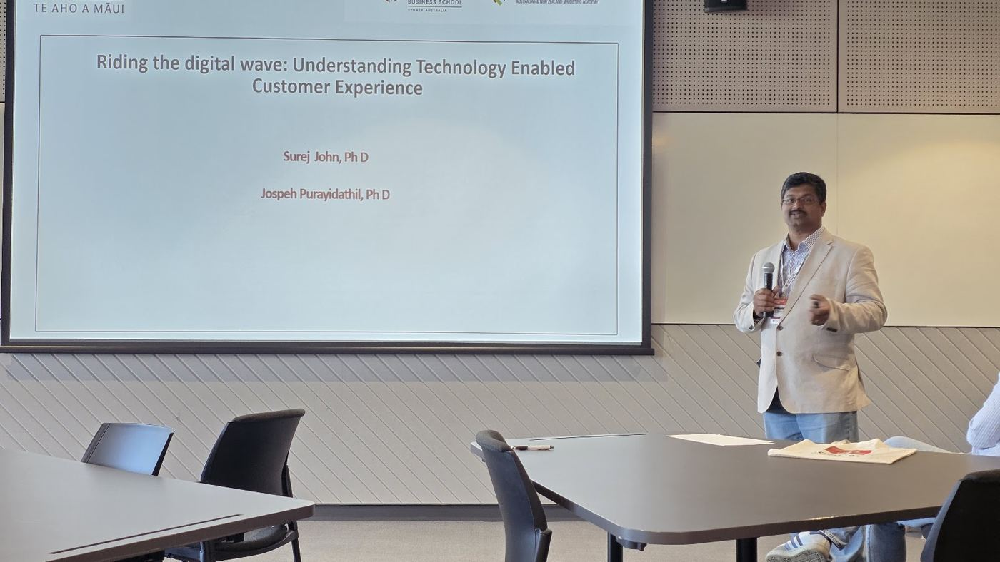
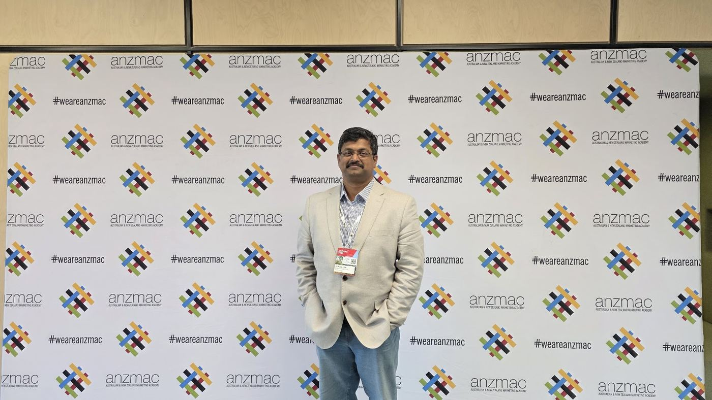
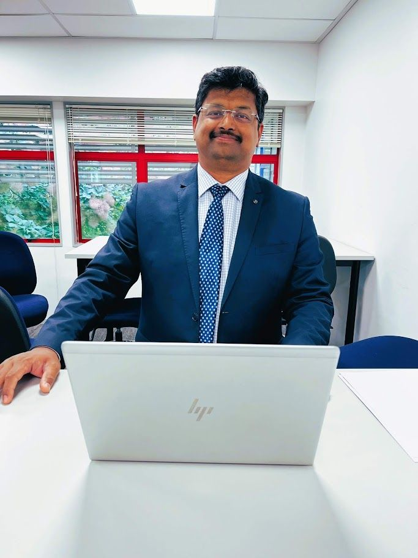
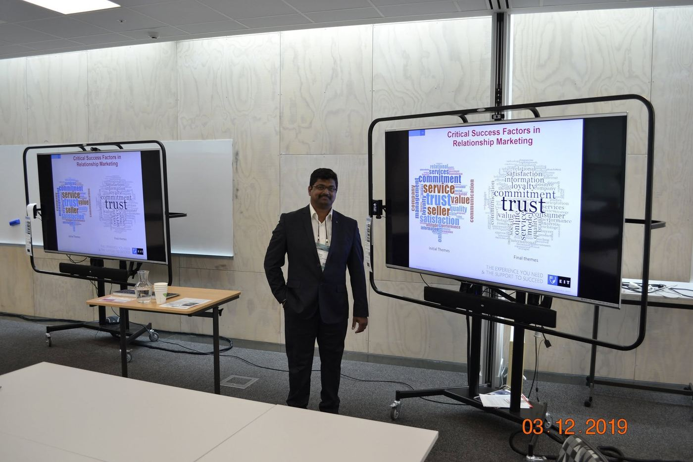

Research
How digital channels, AI and human interaction create value for customers, students and visitors. Most of my work uses survey data analysed with structural equation modelling, alongside systematic literature reviews and qualitative analysis.
Grants and funding
Beyond Automation: How AI Capabilities Transform Customer Experience in Online Food Delivery Services
Research grant from Eastern Institute of Technology (EIT), awarded 13 July 2026.
Current projects
AI capabilities and customer experience in online food delivery
Funded by the EIT research grant above.
Student satisfaction in New Zealand tertiary education
What drives satisfaction among tertiary students, and how providers can respond.
Retailers’ adoption of information technology
How retailers adopt and spread IT when forming their marketing strategies.
Editorial and review roles
Editorial board member
FIIB Business Review; Journal of Hospitality and Tourism Management
Reviewer
Annals of Tourism Research, Australasian Marketing Journal, Journal of Consumer Behaviour, Journal of Hospitality and Tourism Technology, Journal of Travel and Tourism Marketing, Journal of Strategic Marketing, Journal of Travel Research, Anatolia, Australasian Journal of Information Systems and International Journal of E-Commerce
Methods
Structural equation modelling and multivariate analysis (SPSS, AMOS), systematic literature reviews, and qualitative analysis in NVivo.
Conferences
Presenting my research at the Australian and New Zealand Marketing Academy (ANZMAC) conference.




Publications
journal articles, book chapters and conference papers since 2012. Filter by theme or search by keyword.
Looking for a research collaborator?
I am open to co-authoring, joint grant applications and methods support.